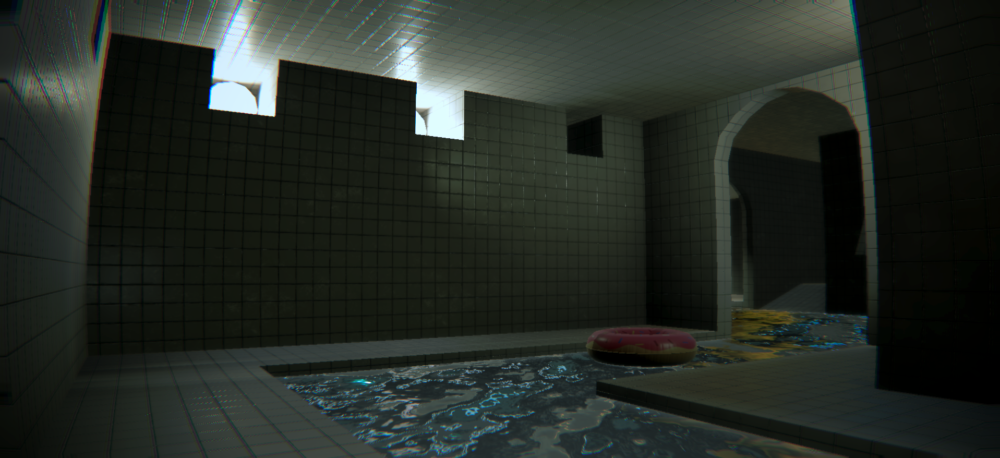
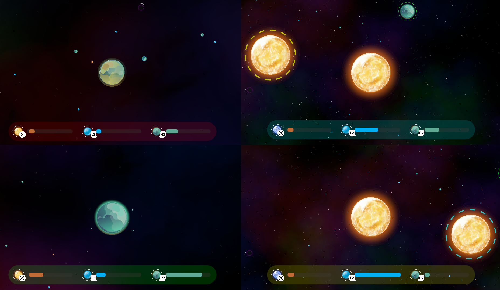
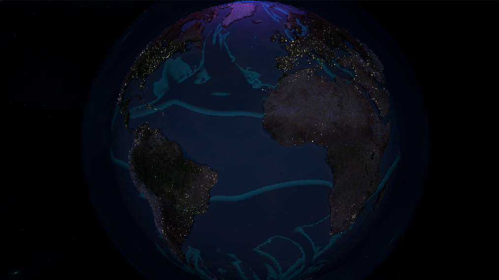
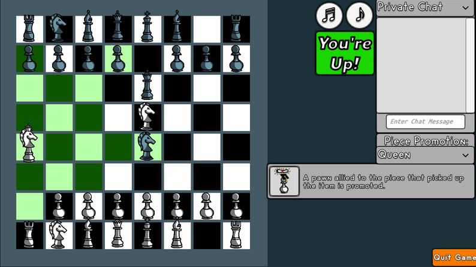
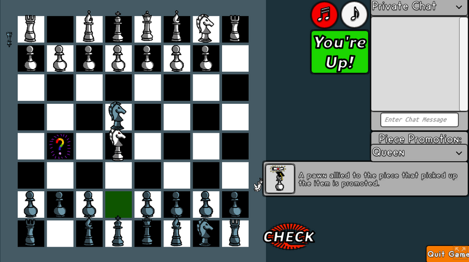

Eric Patrick
Software Engineer・Game Programmer・Student


I am a game designer and programmer with experience in Unity, Unreal and JavaScript looking to create engaging and innovative gameplay experiences.
Currently, I am pursuing a double major in Game Design and Computer Science at UCI. If you have any questions or comments please don't hesitate to reach out on email or linked in!
Thank you for visiting my portfolio, and I hope you enjoy exploring my projects!


The Scraprooms is a proximity chat multiplayer extraction game where you and up to five friends explore a procedurally generated backrooms in search of valuable props to save your struggling company from financial ruin. Players must use their trusty vacuum gun to obtain as many props as they can, balancing greed and survival as they explore. They can spend their earnings to revive teammates, purchase upgrades, or repair elevators to unlock lower floors. The game was developed as a pitch project through UCI’s Video Game Development Club in Spring 2025 and was continued over Summer 2025 outside of the pitch program.
I pitched The Scraprooms concept and led an 11-member team through a five-month development cycle to create a polished vertical slice of the game. I implemented online multiplayer and integrated proximity-based voice chat using Photon Fusion and Vivox. To maximize performance while having potentially hundreds of physics simulated props in game, I designed and built a hybrid networked object system that minimized the number of network-synchronized objects.


Convergence is a real-time gravity simulation game where thousands of particles interact dynamically. When two particles collide, the larger absorbs the smaller, increasing its mass. Planets contain elements that grant players special abilities, such as Ice Shielding and Gas Propelling. The game supports both single-player and local multiplayer (up to four players) with full console controller integration. In Spring 2024, I pitched this concept and led a team of four peers to develop it over 10 weeks as a Pitch-Project through UCI’s Video Game Development Club.
The project began with a gravity simulation game I initially created in Unity as a personal experiment. Inspired by games like Agar.io, I envisioned a game where players control a particle within that dynamic, (almost) unpredictable system, growing and evolving by absorbing others. After pitching the concept to UCI’s Video Game Development Club, I formed a team and led the development of Convergence over a 10-week period. My primary contributions included leading stand-ups, designing the gameplay mechanics, implementing particle interactions, and optimizing the performance of the gravity simulation. I ported the original single-threaded CPU simulation code to a multi-threaded GPU compute shader, achieving an 800% boost in simulation performance. This enhancement enabled us to handle the gravity calculations for over 1,600 particles in real-time, as opposed to the 200 a purely CPU based approach provided.
Convergence was presented at the 2024 UCI Z3 Industry Expo, where we received positive feedback from both the gaming community and industry professionals. The unique blend of survival mechanics and gravitational physics intrigued players, and many expressed excitement about the possibility of adding online multiplayer, in addition to the existing local multiplayer functionality.


Professor Maren & The Aqueous Stones was my solo submission to the University of Delaware's Climate Change Game Jam. This game features a Compute Shader fluid simulation that models ocean waves on a globe. Players take on the role of an Ocean Spirit, protecting Professor Maren as she seeks to assemble the Aqueous Stones, a supposed "Silver Bullet" against climate change. Each level challenges players to strategically manage a limited pool of energy, summoning waves, waterspouts, whirlpools, and hurricanes to overcome obstacles and defend the Professor.
Professor Maren & The Aqueous Stones was created as my solo submission to the University of Delaware’s Climate Change Game Jam. The game features a Compute Shader fluid simulation that models ocean waves on a Mercator projection Earth, mapped onto a globe. This marked my first experience with compute shaders, which provided invaluable insights I later applied to Convergence. The game was built using Unity and completed within the two-week jam period.
Professor Maren & The Aqueous Stones won "Best Overall Game" in the University of Delaware’s Climate Change Game Jam. It received praise for its innovative gameplay, unique art style, and immersive sound design. Judges appreciated the game’s narrative, with the final twist that there is no “Silver Bullet” for climate change, only actions we can take in the present.
Pipeline is a 2D fluid simulation puzzle game featuring 107 levels and several hours of gameplay. Players paint tiles to guide different types of fluids into the goal pipe, each fluid having unique behaviors and interactions with the environment.
Pipeline was developed iteratively over six months during my high school years, working through my school’s sneakernet. I programmed and designed each of the 107 levels and gameplay systems, with rigorous testing and feedback from players. The game revolves around guiding different types of fluids by painting tiles, with each fluid exhibiting unique behaviors and interactions with the environment.
I focused on making the gameplay both complex and engaging by ensuring that the interactions between fluids, pipes, and obstacles created intricate puzzles. At the same time, I prioritized accessibility by incorporating features like visual effect toggles, allowing players to disable elements such as screen flipping, which could be uncomfortable for some users. This approach ensured the game was both challenging for puzzle enthusiasts and accessible to a wider audience.


Chess But Better is an online chess mod created for a group class project. The assignment challenged teams to modify or build upon core chess mechanics to serve a specific purpose. Our team focused on leveling the playing field between novice and expert players by introducing an element of randomness.
To achieve this, we incorporated randomly spawning items that activate unique effects when a piece moves onto them. These effects range from freezing nearby pieces to temporarily transforming a piece into the “Monster,” a hybrid of a queen and a knight. By disrupting rigid strategies, these mechanics force both newcomers and seasoned players to adapt dynamically, making for a more unpredictable and engaging chess experience.
The game was developed in about one week, and I was responsible for all the coding and implementation of these new features, including integrating the items and their effects into the core chess mechanics. I also leveraged my experience from Pocket Panzers to set up a multiplayer rooms system using Photon PUN, allowing for online multiplayer gameplay.